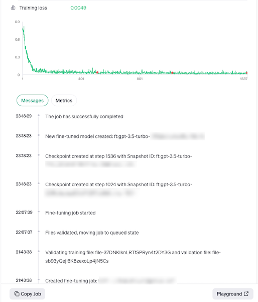
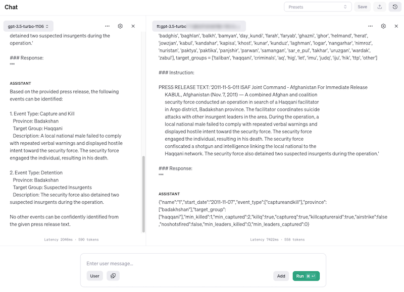
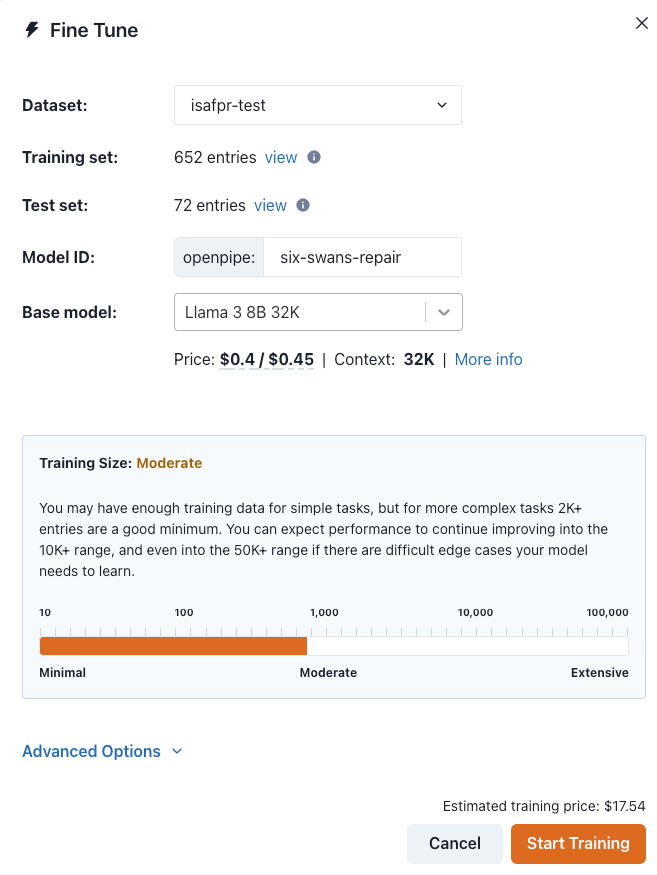
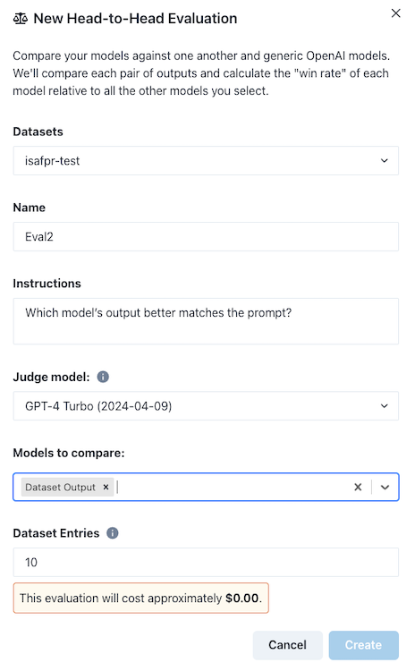
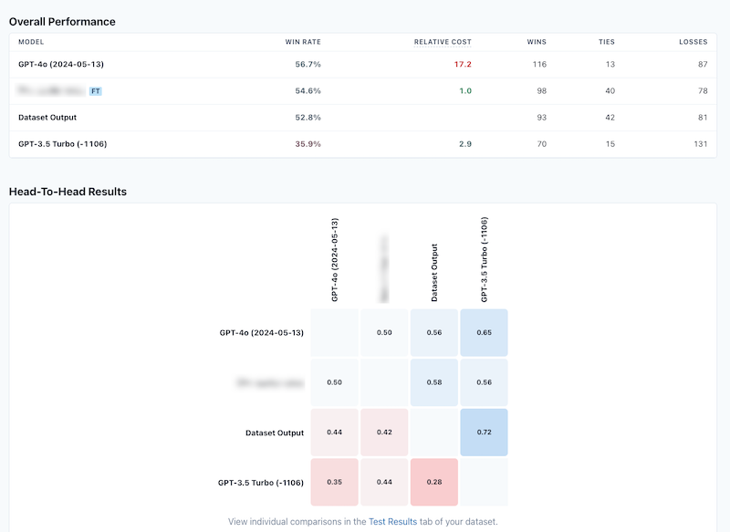
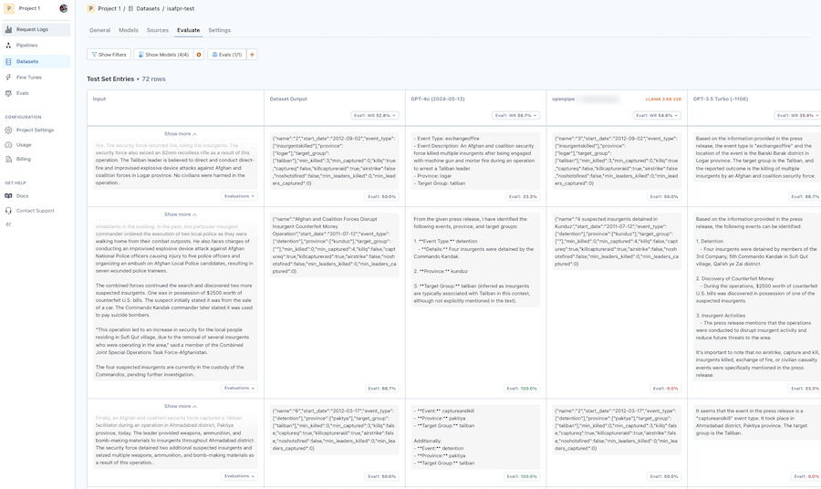

pr1 = """2011-11-S-011 ISAF Joint Command - Afghanistan For Immediate Release
KABUL, Afghanistan (Nov. 7, 2011) — A combined Afghan and coalition
security force conducted an operation in search of a Haqqani facilitator
in Argo district, Badakshan province. The facilitator coordinates suicide
attacks with other insurgent leaders in the area. During the operation, a
local national male failed to comply with repeated verbal warnings and
displayed hostile intent toward the security force. The security force
engaged the individual, resulting in his death. The security force
confiscated a shotgun and intelligence linking the local national to the
Haqqani network. The security force also detained two suspected insurgents during the operation."""
prompt = f"""You are an expert at identifying events in a press release. You are precise and always make sure you are correct, drawing inference from the text of the press release. event_types = ['airstrike', 'detention', 'captureandkill', 'insurgentskilled', 'exchangeoffire', 'civiliancasualty'], provinces = ['badakhshan', 'badghis', 'baghlan', 'balkh', 'bamyan', 'day_kundi', 'farah', 'faryab', 'ghazni', 'ghor', 'helmand', 'herat', 'jowzjan', 'kabul', 'kandahar', 'kapisa', 'khost', 'kunar', 'kunduz', 'laghman', 'logar', 'nangarhar', 'nimroz', 'nuristan', 'paktya', 'paktika', 'panjshir', 'parwan', 'samangan', 'sar_e_pul', 'takhar', 'uruzgan', 'wardak', 'zabul'], target_groups = ['taliban', 'haqqani', 'criminals', 'aq', 'hig', 'let', 'imu', 'judq', 'iju', 'hik', 'ttp', 'other']
### Instruction:
PRESS RELEASE TEXT: '{pr1}'
### Response:
"""The last post in this series showed that finetuning an LLM needn’t be particularly difficult. I used axolotl to produce finetuned versions of Llama3, Mistral and TinyLlama models. During the course we were given a bunch of credits by various companies in the LLM and finetuning space. Among those were credits from some finetuning-as-a-service companies and I thought now might be a good time to try out these services now that I’ve done the process manually a few times.
I picked three to try out: Predibase, OpenPipe and OpenAI. All were surprisingly similar in the approach they took. I’ll give a few details on the experience for each and how they compare to each other. With all the services, the process was roughly the same as when I did it manually:
- Upload custom data
- Select some hyperparameters
- Start the finetuning
- Try the model
The step I had the most trouble with was the custom data upload, since each provider wanted the data in a different format. Converting the data from the Pydantic models I had previously created was not a huge deal, but I wasn’t sure about the tradeoffs that I was making (or that were being made for me) by converting my data into these formats.
Predibase
I started with Predibase since I had enjoyed the talk Travis Addair had given during the course. Predibase is famous for their work on LORA adapters, particularly their demonstration of Lora Land where they gave some examples of how finetuned LORA models / adapters could outperform GPT-4.
Predibase requires that the data you upload has certain column names depending on the task you select for the finetuning. At the moment they have instruction tuning and text completion as their two tasks, but it wasn’t clear to me which to select. (They also have a Colab notebook to help with constructing splits from your data.)
Once your data is ready and validated, you can select the model you want to finetune along with a few other hyperparameters. This is the full extent of what you can set from the web UI:
There’s also a helpful dataset preview pane to give a final sanity check for your data, to make sure that the inputs and outputs look what you’d expect:
As you’ll read in a little bit, this feature helps catch potentially costly errors before you start the finetuning process.
Once you click the button to start the training, there isn’t a great deal of information available to you beyond (eventually) a loss curve that you can see. I chose to finetune Qwen2 in Predibase and this took about 53 minutes using an A-100 GPU accelerator.
Once your model is ready, you can prompt the model in the UI, or using their REST API / Python SDK. They give code snippets prefilled with some dummy text that you can easily try out locally. Let’s show that here, but before you can run your inference query you have to first deploy the model. I hadn’t expected this extra step, and it takes a while to spin up since it’s deploying the adaptor along with the base model it was finetuned alongside. My Qwen2 model has a context window of 131072 tokens and supposedly would cost $3.90 per hour that it was up (as a dedicated deployment).
Let’s show the results we got:
import os
from predibase import Predibase
pb = Predibase(api_token=os.getenv("PREDIBASE_API_KEY"))
# pb = Predibase(api_token="")
lorax_client = pb.deployments.client("isafpr")
print(lorax_client.generate(prompt, max_new_tokens=100).generated_text)Unfortunately my Predibase model deployment was still ‘initializing’ after a couple of hours of spinning up. I didn’t want to leave that dedicated deployment up and running overnight, so I just deleted the deployment and I’ll try to get this going at a later date. So no inference sample to show you for this one. I’m very curious to see how Qwen2 did, though!
OpenAI
I was actually surprised that this is even a thing that people do or that is offered by OpenAI. Currently you’re able to finetune three versions of GPT3.5 as well as babbage-002 and davinci-002. In the OpenAI presentation during the course they mentioned that they were working to make it possible to finetune GPT4 as well, but no timeline was given on this.
So why would someone want to finetune GPT3.5? I think there are some problems that are sufficiently complex or of a specific nature where the OpenAI GPT family shines where you might want to squeeze out a final last bit of performance and where the open LLMs just aren’t there yet.
The OpenAI models are sort of the antithesis of an ‘open’ model and nothing about the finetuning process lent itself to disabusing you of that idea. This was the UI to fill in in order to finetune a model and as you can see there aren’t really too many options available to you.
Supposedly the data you upload (options for train as well as a separate test set here) will never be used by OpenAI to train their models but you have to just trust them on that front.

As with Predibase, during finetuning you don’t have access to any logs or even too much feedback during training. You get a loss curve and a few scraps of metadata and that’s it. The training took around 90 minutes to run and then you’re able to prompt the model to see how it works, using the standard OpenAI interface and methods you’re used to:
from openai import OpenAI
from rich import print
import json
import os
client = OpenAI(api_key=os.getenv("OPENAI_API_KEY"))
response = client.chat.completions.create(
model="ft:gpt-3.5-turbo-SOME_EXTRA_STUFF_HERE_FOR_MY_MODEL",
messages=[
{
"role": "system",
"content": "You are an expert at identifying events in a press release. You are precise and always make sure you are correct, drawing inference from the text of the press release. event_types = ['airstrike', 'detention', 'captureandkill', 'insurgentskilled', 'exchangeoffire', 'civiliancasualty'], provinces = ['badakhshan', 'badghis', 'baghlan', 'balkh', 'bamyan', 'day_kundi', 'farah', 'faryab', 'ghazni', 'ghor', 'helmand', 'herat', 'jowzjan', 'kabul', 'kandahar', 'kapisa', 'khost', 'kunar', 'kunduz', 'laghman', 'logar', 'nangarhar', 'nimroz', 'nuristan', 'paktya', 'paktika', 'panjshir', 'parwan', 'samangan', 'sar_e_pul', 'takhar', 'uruzgan', 'wardak', 'zabul'], target_groups = ['taliban', 'haqqani', 'criminals', 'aq', 'hig', 'let', 'imu', 'judq', 'iju', 'hik', 'ttp', 'other']."
},
{
"role": "user",
"content": pr1
}
],
temperature=0
)
print(json.loads(response.choices[0].message.content)){ 'name': '1', 'start_date': '2011-11-07', 'event_type': ['captureandkill'], 'province': ['badakhshan'], 'target_group': ['haqqani'], 'min_killed': 1, 'min_captured': 2, 'killq': True, 'captureq': True, 'killcaptureraid': True, 'airstrike': False, 'noshotsfired': False, 'min_leaders_killed': 0, 'min_leaders_captured': 0 }
They also give you an interface to see the response of the base model side-by-side against the finetuned model:

As you can see, it’s done pretty well! It stuck to the JSON structure, and the extracted metadata looks good. Of course, since this is a GPT3.5 model, there’s no way to now download this model and run it locally. You’re hostage to OpenAI, to being online, etc etc. Not a scenario I’d like to be in, so I don’t think I’ll pursue this much further and rather use my OpenAI credits for other purposes.
All that said, I do think there might be some scenarios where only the OpenAI models are reliable enough to use (be that in terms of accuracy or with sufficient guardrails) and there were people in the course who were in this boat.
OpenPipe
This was the last one-click provider I tried. As with the others, you upload your data first. When I tried this, I got a fairly opaque error message but I guess the format I’d used was incompatible. OpenPipe uses the same format as OpenAI does, it turns out, but it handles the train/test split itself so you just have to set your data up in a single file (unlike with OpenAI where they can take two separate files).
The interface for finetuning your model was somehow the most threadbare of all:

Moreover, the selection of base models on which to finetune were also pretty slim: Llama3, Mistral, Mixtral and two OpenAI GPT3.5 models. I was surprised by the estimate of how much it’d cost to finetune the model (around $30 USD) but by limiting the number of options available to the user the path forward really was pretty easy.
You get no single morsel of information during the finetuning process and for me it took a while for the job to even start working, but after an hour or two (I can’t be sure as I left my desk) you get a model out the other end. At this point you can export the weights or just try out the model with a Python call.
Helpfully, the web UI gives you code snippets you can use for Python, Javascript and cURL, and the snippets even have your prompt pre-filled with an example from your dataset. This was a nice touch.
# pip install openpipe
from openpipe import OpenAI
from rich import print
import json
import os
client = OpenAI(
openpipe={"api_key": os.getenv("OPENPIPE_API_KEY")}
)
completion = client.chat.completions.create(
model="openpipe:MY_MODEL_ID_WAS_HERE",
messages=[
{
"role": "system",
"content": "You are an expert at identifying events in a press release. You are precise and always make sure you are correct, drawing inference from the text of the press release. event_types = ['airstrike', 'detention', 'captureandkill', 'insurgentskilled', 'exchangeoffire', 'civiliancasualty'], provinces = ['badakhshan', 'badghis', 'baghlan', 'balkh', 'bamyan', 'day_kundi', 'farah', 'faryab', 'ghazni', 'ghor', 'helmand', 'herat', 'jowzjan', 'kabul', 'kandahar', 'kapisa', 'khost', 'kunar', 'kunduz', 'laghman', 'logar', 'nangarhar', 'nimroz', 'nuristan', 'paktya', 'paktika', 'panjshir', 'parwan', 'samangan', 'sar_e_pul', 'takhar', 'uruzgan', 'wardak', 'zabul'], target_groups = ['taliban', 'haqqani', 'criminals', 'aq', 'hig', 'let', 'imu', 'judq', 'iju', 'hik', 'ttp', 'other']."
},
{
"role": "user",
"content": pr1
}
],
temperature=0,
openpipe={
"tags": {
"prompt_id": "counting",
"any_key": "any_value"
}
},
)
print(json.loads(completion.choices[0].message.content)){ 'name': '3 killed and 2 captured in Badakhshan', 'start_date': '2011-11-07', 'event_type': ['captureandkill'], 'province': ['badakhshan'], 'target_group': ['haqqani'], 'min_killed': 3, 'min_captured': 2, 'killq': True, 'captureq': True, 'killcaptureraid': True, 'airstrike': False, 'noshotsfired': False, 'min_leaders_killed': 0, 'min_leaders_captured': 0 }
Again you can see we have a really nice result here: JSON is good and the content is solid too. This was a finetune of Llama3 so clearly the problem I noted in the previous blog post was a problem with how I’d set up my local finetune and not with Llama3 itself.
I liked how OpenPipe automatically deployed my model for me once the finetune was complete. Moreover, there was no extra cost associated with this. (Since their base models are limited, I assume this means that they have lost of customers’ LORA adapters all connected to these base models and that’s how they’re able to keep all these deployments up and cost-effective.)
There was one final trick that OpenPipe had up its sleeve: an ‘evals’ interface. The interface is pretty simple again, but the gist is that you get to select OpenAI models to compare your finetune against a test dataset and get a comparison. You can select multiple models to run at the same time and the cost is pretty reasonable.

The evaluation is parallelised and you get a nice table with the aggregate results:

You also (in the datasets tab) get a table with the individual responses for the test data:

Looking at the results you quickly become aware that this specific evaluation didn’t really make much sense. Comparing the same prompt between the finetuned model and GPT4 could never have been fair since my prompt never asks for the result back in a certain format, or that it should be JSON and so on.
Moreover, you can see that the evaluation prompt itself doesn’t do a good job of picking up that the finetuned model really did a great job on the whole and so the aggregate comparison scores don’t really make much sense here.
That said, I found this feature a useful ‘nice-to-have’ and I can see how someone might find this helpful if they either wanted to run a quick experiment or weren’t particularly technically savvy.
Final thoughts
Overall I found this an interesting experience to do these finetunes in parallel. I suspect that I am not the core audience / market for these services. I was surprised how little customisation they offered, and I actually wonder who is using them. They were easy to use, however, and they do potentially open up the possibility for someone less technical to do something somewhat advanced with LLMs that they wouldn’t otherwise be able to do.
The moment you want to do something slightly custom, with your prompt template or with the architecture or try something new and cutting-edge, then immediately these services aren’t for you. Similarly, even though I think all of the services offer a Python SDK to replicate what I did in the web UI, I think you essentially have the same limited options available to you if you wanted to trigger these jobs programatically as part of a larger pipeline.
For the most part you never had the feeling that you were part of a wider ecosystem of these open models, with new techniques coming out all the time and new models as well. These are some of the things I missed from the experience, but as I mentioned before, I’m not the core audience here.
I do appreciate the opportunity to try these out a few times and the companies for providing credits to do some meaningful attempts at doing something useful. I’ll try these a bit further down the road again and report back if my impression changes or if/when new features are added.